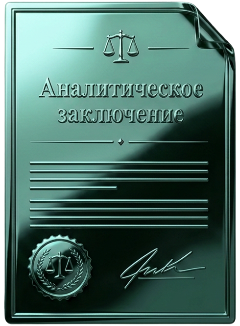

Уголовное дело
- Поступило заявление в правоохранительные органы
- Вызывают на опрос или допрос
- Возбуждено уголовное дело
- Предъявлено обвинение
- Дело передано в суд
Изучим материалы уголовного, гражданского или административного дела и подготовим письменное аналитическое заключение: что происходит, какие есть риски и на что обратить внимание при дальнейших действиях.


Заключение готовится специалистами, имеющими практический опыт работы с юридическими делами.

Вы получаете не устную консультацию, а структурированное аналитическое заключение.

Фиксированный срок подготовки после получения необходимых материалов.

Документы доступны только специалистам, участвующим в подготовке заключения.

Специалист изучит предоставленные документы и кратко зафиксирует основные обстоятельства дела.
Клиент увидит, какие обстоятельства могут повлиять на дело и какие негативные последствия необходимо учитывать.
В заключении будут описаны вероятные варианты дальнейшего развития ситуации с учётом представленных материалов.
Будут обозначены вопросы, на которые стоит обратить внимание, и возможные действия для снижения рисков.
Заключение носит аналитический характер и не является гарантией конкретного судебного или процессуального результата.
Услуга подойдёт, когда необходимо сначала разобраться в ситуации, оценить основные риски или проверить уже выбранную стратегию. Вы получаете письменный разбор, с которым сможете принимать дальнейшие решения и предметно обсуждать дело со своим адвокатом или представителем.


Кратко расскажите, что произошло и на какой стадии находится дело.
Оператор уточнит, какие материалы необходимы для анализа.
После предварительного знакомства с ситуацией оператор подтвердит возможность проведения анализа, стоимость и срок.
После согласования условий производится оплата.
Готовое заключение направляется в согласованный срок.
Юридические документы содержат чувствительную информацию. Поэтому процесс работы построен таким образом, чтобы доступ к материалам имел только ограниченный круг специалистов.
Мы запрашиваем только те документы, которые действительно необходимы для анализа конкретной ситуации. Не нужно загружать материалы, не относящиеся к вашему вопросу.
Материалы доступны только оператору и специалисту, который готовит аналитическое заключение. Доступ третьих лиц исключается.
После подготовки заключения документы хранятся только в течение срока, необходимого для исполнения обязательств перед клиентом. По запросу клиента материалы могут быть удалены.
Документы передаются через защищённые каналы связи. Мы не публикуем материалы клиентов и не используем их в качестве примеров без согласия.
По итогам анализа вы получите структурированный документ с описанием ситуации, оценкой возможных сценариев, основными рисками и рекомендациями по дальнейшим действиям. Заключение готовится индивидуально на основании переданных вами документов.
Каждая ситуация индивидуальна. Ниже показано, какие вопросы можно исследовать в рамках аналитического заключения и какой результат получает клиент.
Кратко опишите проблему. Мы сообщим, подходит ли она для
аналитического разбора, какие документы потребуются
и сколько времени займёт подготовка заключения.